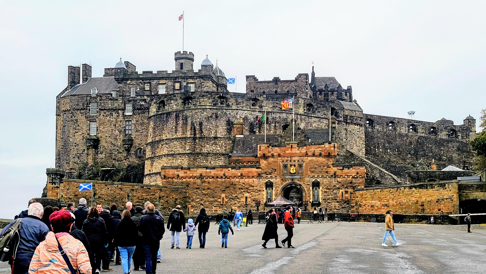
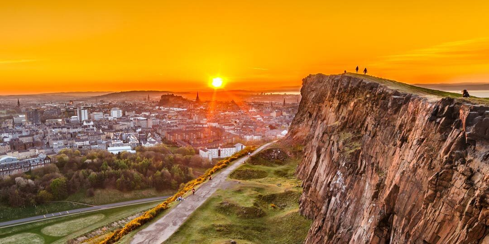
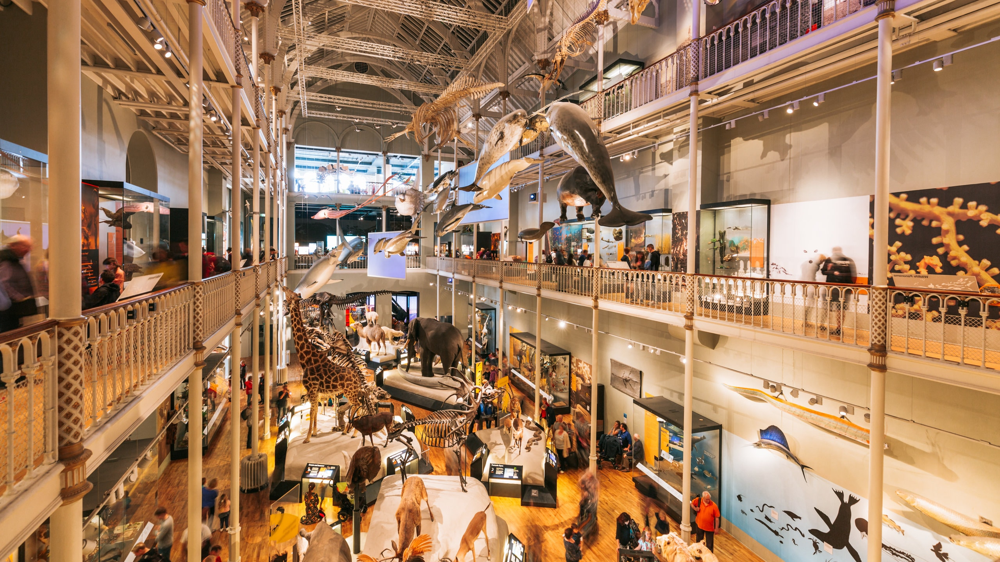
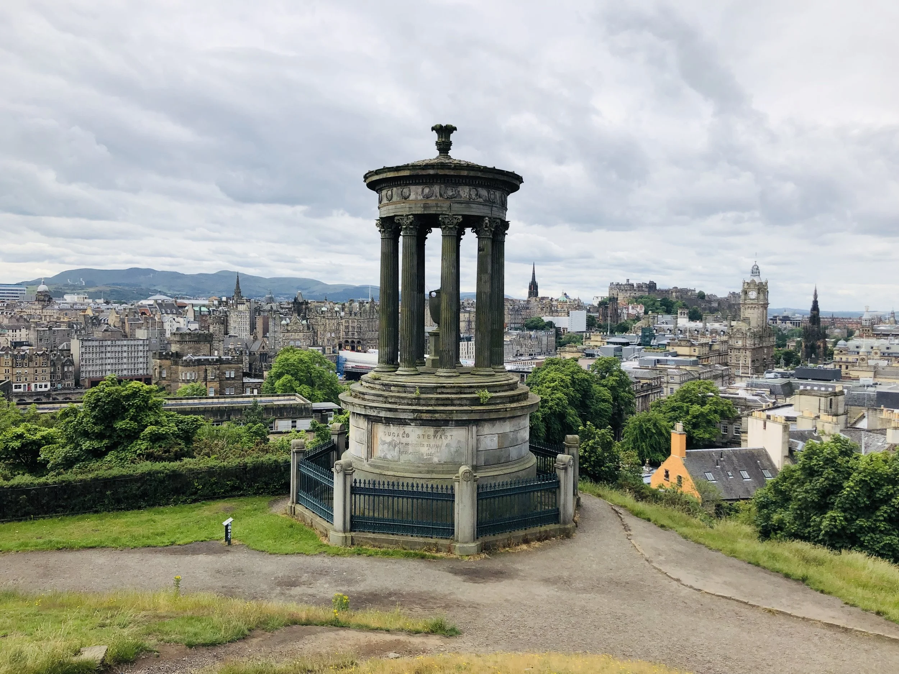
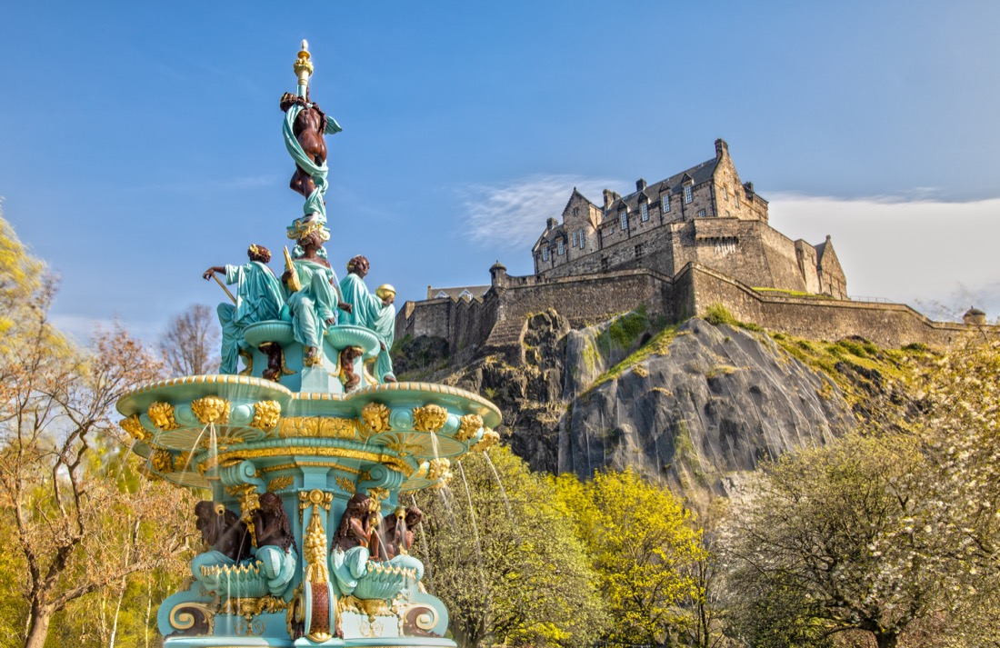

Favorite Attractions
Edinburgh Castle
Sitting high atop Castle, Rock, Edinburgh Castle is one of Scotland's most iconic landmarks. Visitors can explore royal chambers, historic artifacts, and incredible views over the city.
Arthur's Seat
This ancient volcanic hill offers one of the best panormic views of Edinburgh. It is an easy to moderate hike and a perfect way to see the city's natural beauty.
The Royal Mile
Stretching from the castle to Holyrood Palace, the Royal Mile is filled with historic buildings, shops, cafés, and street performers. It is the heart of Edinburgh's Old town charm.

Palace of Holyroodhouse
The official Scottish residence of the King, this palace features stunning gardens, historic state apartments, and the haunting ruins of Holyrood Abbey.

National Museaum of Scotland
A massive, free museum with exhibits ranging from science and world cultures to Scottish history and natural wonders. It is a great place for families and curious visitors.
Calton Hill
Known for its dramatic monuments and unbeatable sunset views, Calton Hill is one of the city's best photography sports. It is easy to climb and close to the city centre.
Princes Street Gardens
These beautiful gardens sit in the heart of the city between Old and New Town, offering peaceful walks, seasonal flowers, and perfect views of the castle.
Dean Village
A peaceful, picturesque historic village right in the city, known for its old mill buildings and scenic riverside walks along the Water of Leith.